Case Study: (Cluster) Robust Standard Errors
Source:vignettes/practical_robustestimation.Rmd
practical_robustestimation.RmdThis vignette demonstrate how to compute confidence intervals based on (cluster) robust variance-covariance matrices for standard errors.
First, we load the required packages and create a sample data set with a binomial and continuous variable as predictor as well as a group factor.
library(ggeffects)
set.seed(123)
# example taken from "?clubSandwich::vcovCR"
m <- 8
cluster <- factor(rep(LETTERS[1:m], 3 + rpois(m, 5)))
n <- length(cluster)
X <- matrix(rnorm(3 * n), n, 3)
nu <- rnorm(m)[cluster]
e <- rnorm(n)
y <- X %*% c(0.4, 0.3, -0.3) + nu + e
dat <- data.frame(y, X, cluster, row = 1:n)
# fit linear model
model <- lm(y ~ X1 + X2 + X3, data = dat)Predictions with normal standard errors
In this example, we use the normal standard errors, as returned by
predict(), to compute confidence intervals.
predict_response(model, "X1")
#> # Predicted values of y
#>
#> X1 | Predicted | 95% CI
#> --------------------------------
#> -2.50 | -1.54 | -2.42, -0.67
#> -2.00 | -1.28 | -2.00, -0.55
#> -1.00 | -0.74 | -1.19, -0.29
#> -0.50 | -0.47 | -0.81, -0.13
#> 0.00 | -0.20 | -0.50, 0.10
#> 0.50 | 0.07 | -0.27, 0.41
#> 1.00 | 0.34 | -0.10, 0.78
#> 2.50 | 1.14 | 0.28, 2.01
#>
#> Adjusted for:
#> * X2 = -0.08
#> * X3 = 0.09
#>
#> Not all rows are shown in the output. Use `print(..., n = Inf)` to show
#> all rows.
me <- predict_response(model, "X1")
plot(me)
Predictions with HC-estimated standard errors
Now, we use sandwich::vcovHC() to estimate
heteroskedasticity-consistent standard errors. To do so, first the
function name, vcovHC(), must be supplied to the
vcov_fun-argument. sandwich::vcovHC(), in
turn, has different types of estimation. This must be specified in
vcov_type. As a shortcut, the estimation type can be
directly passed to vcov_fun, however, this would only call
sandwich::vcovHC().
# shorter: predict_response(model, "X1", vcov_fun = "HC0"). This is equivalent to the following:
predict_response(model, "X1", vcov_fun = "vcovHC", vcov_type = "HC0")
#> # Predicted values of y
#>
#> X1 | Predicted | 95% CI
#> --------------------------------
#> -2.50 | -1.54 | -2.41, -0.68
#> -2.00 | -1.28 | -1.98, -0.57
#> -1.00 | -0.74 | -1.14, -0.34
#> -0.50 | -0.47 | -0.77, -0.17
#> 0.00 | -0.20 | -0.49, 0.09
#> 0.50 | 0.07 | -0.31, 0.44
#> 1.00 | 0.34 | -0.17, 0.84
#> 2.50 | 1.14 | 0.15, 2.14
#>
#> Adjusted for:
#> * X2 = -0.08
#> * X3 = 0.09
#>
#> Not all rows are shown in the output. Use `print(..., n = Inf)` to show
#> all rows.
me <- predict_response(model, "X1", vcov_fun = "vcovHC", vcov_type = "HC0")
plot(me)
Passing a function to vcov_fun
Instead of character strings, the vcov_fun argument also
accepts a function that returns a variance-covariance matrix. Further
arguments that need to be passed to that functions should be provided as
list to the vcov_args argument. Thus, we can rewrite the
above code-chunk in the following way:
predict_response(
model,
"X1",
vcov_fun = sandwich::vcovHC,
vcov_args = list(type = "HC0")
)
#> # Predicted values of y
#>
#> X1 | Predicted | 95% CI
#> --------------------------------
#> -2.50 | -1.54 | -2.41, -0.68
#> -2.00 | -1.28 | -1.98, -0.57
#> -1.00 | -0.74 | -1.14, -0.34
#> -0.50 | -0.47 | -0.77, -0.17
#> 0.00 | -0.20 | -0.49, 0.09
#> 0.50 | 0.07 | -0.31, 0.44
#> 1.00 | 0.34 | -0.17, 0.84
#> 2.50 | 1.14 | 0.15, 2.14
#>
#> Adjusted for:
#> * X2 = -0.08
#> * X3 = 0.09
#>
#> Not all rows are shown in the output. Use `print(..., n = Inf)` to show
#> all rows.Predictions with cluster-robust standard errors
The last example shows how to define cluster-robust standard errors.
These are based on clubSandwich::vcovCR(). Thus,
vcov_fun = "vcovCR" is always required when estimating
cluster robust standard errors. clubSandwich::vcovCR() has
also different estimation types, which must be specified in
vcov_type. Furthermore, clubSandwich::vcovCR()
requires the cluster-argument, which must be
specified in vcov_args:
predict_response(
model, "X1", vcov_fun = "vcovCR", vcov_type = "CR0",
vcov_args = list(cluster = dat$cluster)
)
#> # Predicted values of y
#>
#> X1 | Predicted | 95% CI
#> --------------------------------
#> -2.50 | -1.54 | -2.34, -0.75
#> -2.00 | -1.28 | -1.97, -0.58
#> -1.00 | -0.74 | -1.31, -0.17
#> -0.50 | -0.47 | -1.04, 0.10
#> 0.00 | -0.20 | -0.82, 0.41
#> 0.50 | 0.07 | -0.63, 0.76
#> 1.00 | 0.34 | -0.46, 1.13
#> 2.50 | 1.14 | -0.05, 2.33
#>
#> Adjusted for:
#> * X2 = -0.08
#> * X3 = 0.09
#>
#> Not all rows are shown in the output. Use `print(..., n = Inf)` to show
#> all rows.
me <- predict_response(
model, "X1", vcov_fun = "vcovCR", vcov_type = "CR0",
vcov_args = list(cluster = dat$cluster)
)
plot(me)